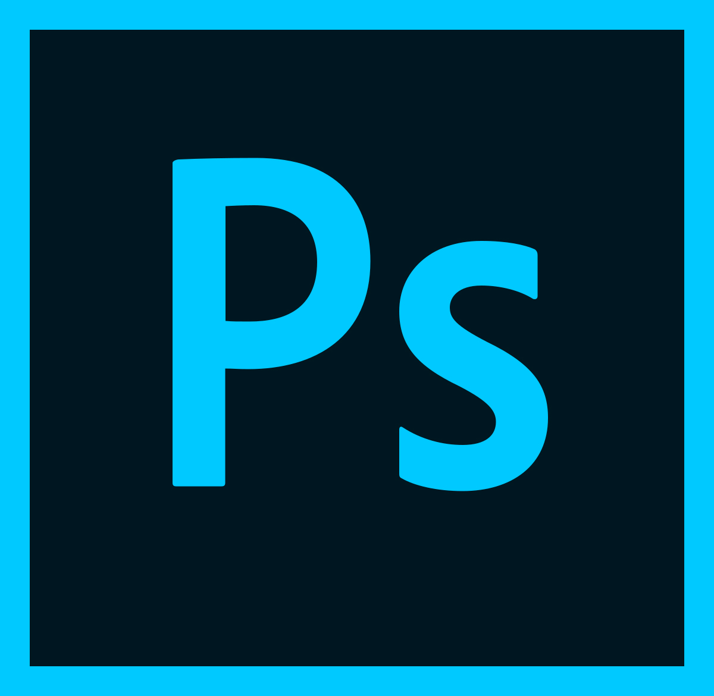

Family
Family Spotlight
Spotlight Career
Career Review
Review Survey
Survey Favorites
Favorites Cause
Cause

Similar to what I said on the Career page, graphic design is something I love doing. Photo editing, video editing, web design, etc is something I find myself often resorting to when I have nothing else to do.

For photo editing, I use photoshop. It's the most well-known photo editor, and it offers a ton of ways to edit the photos in question. I
don't normally edit snythingspecific, as I'll literally just look on the internet for random images to edit. Some examples are how I'll
change the color scheme of certain characters.
For video editing, i use Wondershare Filmora. While it's not Sony Vegas pro or Adobe Premiere Pro, it's very simple and easy to use. In fact, I have made a video in the past on how to use Filmora titled "7 random tips and tricks to video editing (for beginners)".